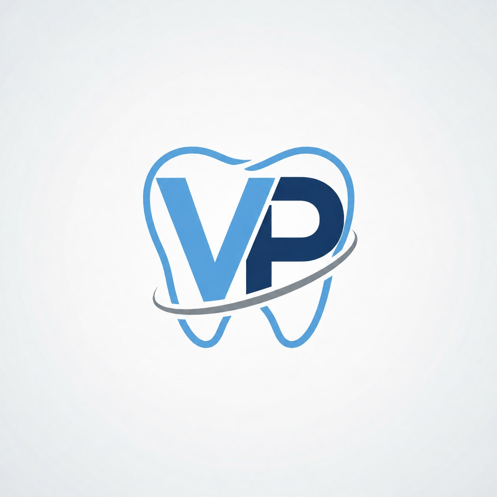
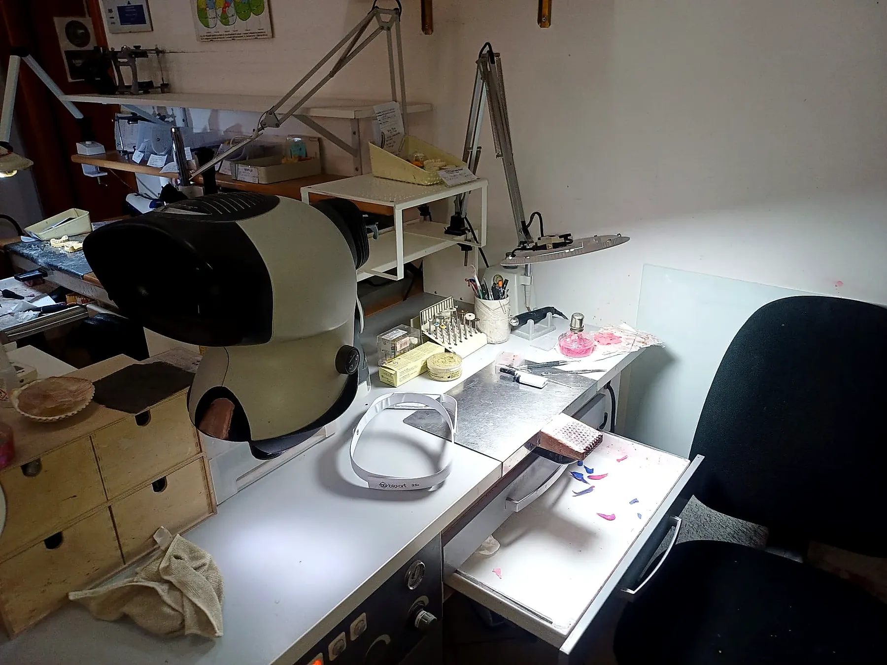
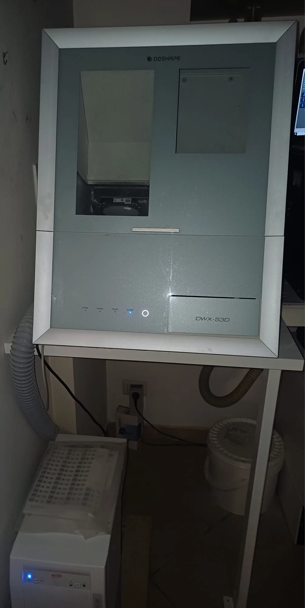
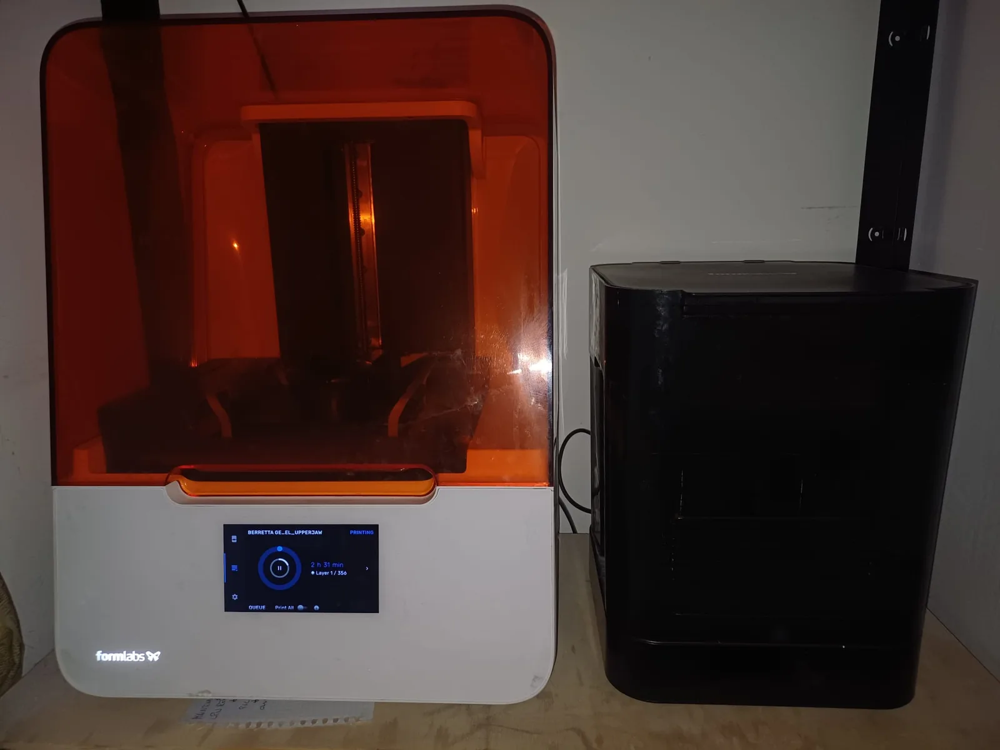
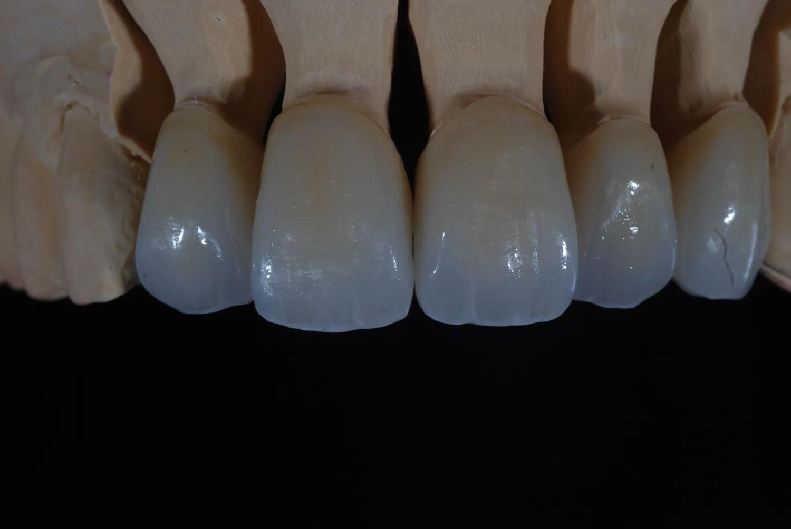

Scanner digitale
Acquisizione accurata dei dati per una progettazione precisa e ripetibile.
Precisione artigianale, innovazione digitale, sorrisi che durano nel tempo.




Realizziamo soluzioni odontotecniche di alta precisione, unendo esperienza, innovazione e tecnologie digitali per garantire risultati affidabili, estetici e duraturi.
Collaboriamo ogni giorno con studi dentistici, offrendo qualità, puntualità e cura di ogni dettaglio.
Dalla progettazione digitale alla rifinitura artigianale.

Soluzioni permanenti su misura per ripristinare funzionalità ed estetica.
Scopri di più →
Manufatti protesici su impianti studiati per precisione e stabilità.
Scopri di più →
Progettazione e produzione digitale di manufatti odontotecnici.
Scopri di più →Modelli, dime e componenti prodotti con sistemi tridimensionali.
Scopri di più →
Faccette ad alta resa estetica per risultati naturali e luminosi.
Scopri di più →
Restauri estetici, resistenti e altamente naturali.
Scopri di più →Acquisizione accurata dei dati per una progettazione precisa e ripetibile.
Progettazione e produzione digitale per qualità costante e controllo del processo.
Modelli e dime chirurgiche personalizzati con tempi di produzione ottimizzati.
Una selezione dall’archivio del laboratorio. La galleria completa raccoglie oltre 150 immagini ordinate per tipologia.


Contatta il laboratorio per informazioni, tempistiche e modalità di collaborazione.